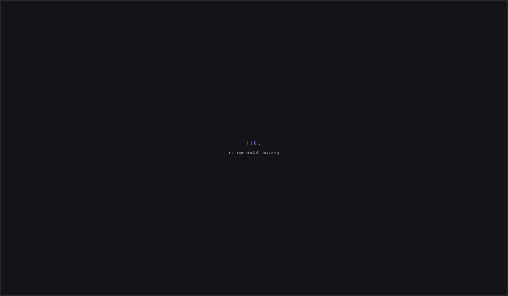
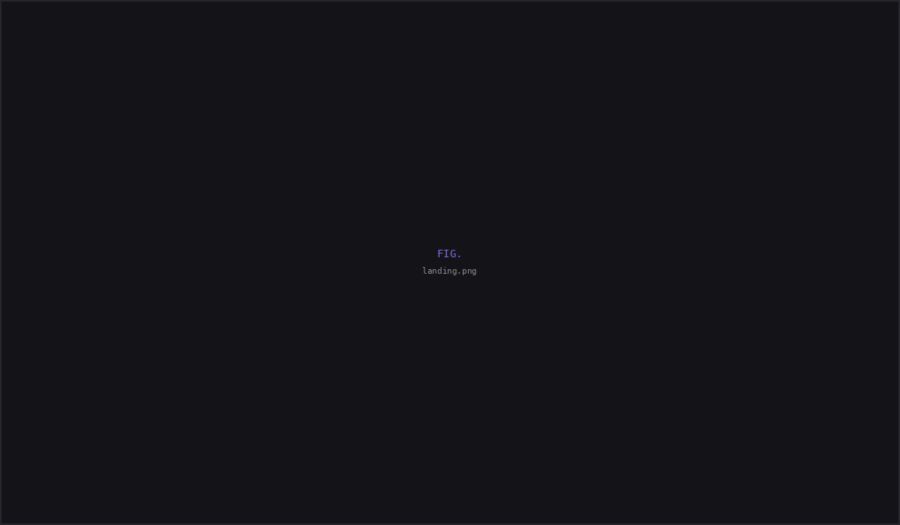
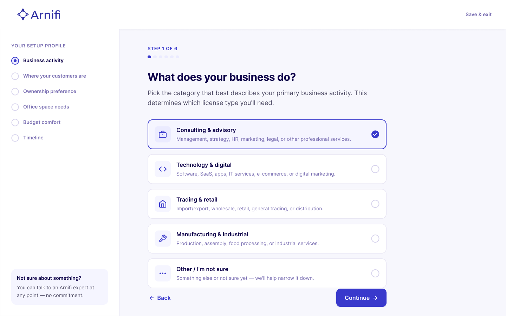
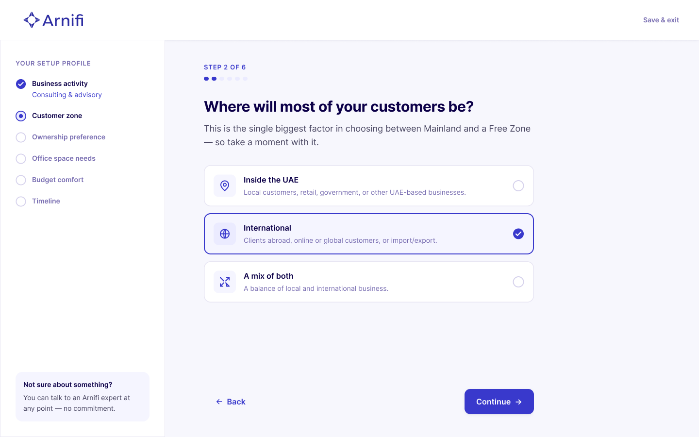
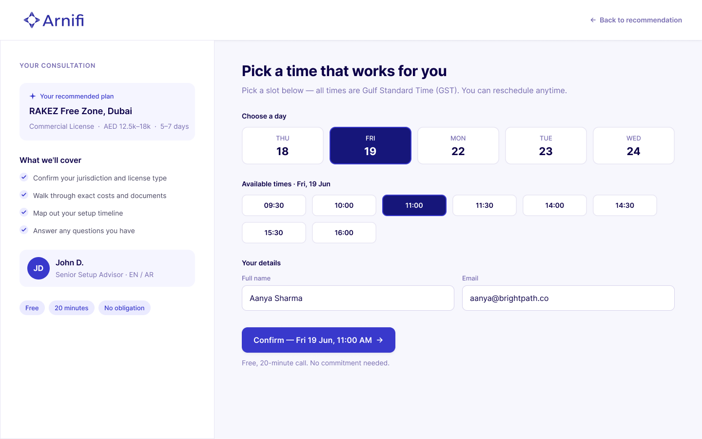

Arnifi: helping confused founders pick a UAE setup.
A 48 hour design task for Arnifi's hiring process. I was asked for a recommendation experience and added the education layer that makes a recommendation mean anything to first time founders.
| Company | Arnifi — UAE business setup advisory |
| Role | UI/UX Designer [Task] (hiring process) |
| Timeline | 2 days |
| Scope | 5 desktop screens + mobile version screen + 1-page design rationale |
The brief
Design a recommendation experience that helps first time founders navigate the complexity of starting a business in the UAE. Users often arrive without understanding Mainland vs Free Zone, licensing options, setup costs, or timelines. My task was to simplify those decisions into a guided journey that ends with a personalized recommendation and consultation booking, all within Arnifi's existing visual language, over a 2 day timeline.
What I delivered
Five desktop screens, a mobile version of any of the desktop screens, and a 1 page rationale built on a full design system. But the real deliverable was a decision: adding an education layer the brief never asked for, because the recommendation doesn't work without it.

The first thing a confused founder does is leave to Google
Before I designed anything, I went through the actual Arnifi website as if I were a first time founder. The site assumes that the user has the vocabulary required to understand and convince them. It drops terms like "IFZA Free Zone," "DMCC," and "Mainland license" without explanation. It shows HR tools, EMI plans, affiliate programmes, and jurisdiction pricing all before a new founder even knows the difference between Mainland and Free Zone.
So the first thing a confused founder does on the current site is leave to Google the basics. And if they're leaving to Google, what's the point of the firm?
Arnifi already has a cost calculator and an AI assistant. The differentiator for Arnifi is its decision confidence, not pricing . Take someone from "I don't know what any of this means" to "I know which path is right for me, and why."
The decision I added to the brief
The brief asked for a recommendation experience: a quiz that leads to a personalised result. But if a user doesn't know what "Free Zone" means, a screen showing "RAKEZ Free Zone, 96% match" is meaningless. The recommendation only works if the user understands the terms being recommended.
So I added a "Two paths to set up in the UAE" section to the landing page before the quiz, before "How it works," before anything else. Two cards: Free Zone on the left, Mainland on the right. What you get, the trade offs, and a starting price (Free Zone from AED 5,500, Mainland from AED 18,000). Below both, one italic line: "Not sure which fits? Answer 6 quick questions and we'll recommend one."

This section wasn't in the brief. It was the most important decision in the project. Without it, the comparison table on the results screen appears out of nowhere. With it, the user's recommendation becomes a deeper, personalised version of something they've already been introduced to.
A 6-question wizard, sequenced by dependency
The quiz is six questions, one per screen. A progress stepper on the left ("Your setup profile") shows completed steps, the current step, and what's coming. "Save & exit" in the top right reduces commitment anxiety. A "Not sure about something?" prompt offers expert help at any point.


The order is intentional structural before preference before constraints:
- Business activity
- Where your customers are?
- Ownership preference
- Office space needs
- Budget comfort
- Timeline
Asking budget first is meaningless without knowing what you're budgeting for. That sequencing is dependency mapping, structural questions before preference questions before constraints.
A recommendation that explains itself
The recommendation explains both the result and the reasoning behind it. Every recommendation is backed by the user's answers, while an alternative comparison helps users understand the trade offs instead of accepting a blackbox suggestion.
Instead of hiding trade offs, the experience compares the recommended option with its alternative across ownership, setup requirements, timelines, and costs. The goal wasn't persuasion it was helping first time founders make an informed decision with confidence.
Recommendations also acknowledge when the alternative may be a better fit, reinforcing that the system is advisory rather than absolute.
Turning the recommendation into action
The final step turns confidence into commitment. Instead of sending users to a generic booking flow, the recommendation is carried forward into the consultation, summarizing the chosen setup, expected timeline, estimated cost, and assigned advisor before the booking is confirmed.
The booking flow reinforces trust by making the commitment explicit before users proceed. Clear scheduling, transparent expectations, and reassurance around the free consultation reduce hesitation for first time founders who are still uncertain about their decision.

Four principles guided my design
The conventional version of this assignment is: build a quiz, show a result, add a booking CTA. I went a different direction because the problem isn't "users need a recommendation", it's "users don't have the vocabulary to understand one."
Clarity
Plain language, no jargon. "Where will most of your customers be?" instead of "Select your target market jurisdiction."
Transparency
Every recommendation explains the why. Not "we recommend Free Zone" but "you sell to international clients so a Free Zone is purpose built for cross border business."
Confidence
Costs shown as honest ranges (AED 12.5k–18k), not false precision. Estimates are indicative and are confirmed during consultation.
Progressive disclosure
One question at a time. The stepper rail gives pacing. Each screen reveals only what's needed.
Reflection
A recommendation engine is useless if the user doesn't understand what's being recommended.
The "Two paths" comparison is the decision I'd defend most in an interview. Not because it's visually impressive, it's two cards with plain text but because it solves the real problem. A recommendation only works if users understand what they're being recommended.
Going beyond the brief is a risk in a design task for you can look like you didn't follow instructions. But the alternative, a slick quiz that recommends "IFZA Free Zone" to someone who doesn't know what a Free Zone is, solves the wrong problem. The Two paths section isn't scope creep. It's the thing that makes everything after it work.